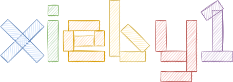

最近的项目

主要研究二进制翻译，喜欢搞有意思的项目。
二进制翻译
二进制翻译其根本目标是在一个平台运行另一个平台的二进制程序。 平台可以是硬件（X86电脑、ARM手机、...）， 也可以是软件（Windows操作系统、谷歌浏览器、Java虚拟机、...）。
抱着这样的想法看二进制翻译的话， 这个涉及、相关的技术其实超级多。 比如仿真、虚拟化、JIT、编译、AoT...
runXonY

如上图👆， 是我研究过程中遇到的和二进制翻译相关的项目。
主要都是在Y平台运行X软件的项目，
也就是runXonY这个名字的来历。
有意思的项目
NixOS
nix_config
我的NixOS和home-manager的配置
markdown_revealjs
markdown转reveal.js的小脚本。 由pandoc驱动。 Demo👇
markdown_cheatsheet
markdown转cheatsheet（紧凑小清单）的小脚本。 由pandoc驱动。 Demo👇
同领域的朋友们
xieby1’s cheatsheet
符号
- ’🐁’仅在我的配置下可用，并不通用
my scripts
allfiles.sh
所有非隐藏文件
as-ld-64/i386.sh
汇编链接x64/i386
asm.sh
汇编 => 机器码
cheatsheet.sh
md => cheatsheet
distgcc/++.sh
distcc wrapper
ff.sh
全文件模糊搜索
formatxml.sh
format xml
grep.sh
全文件搜索
ldd-grep.sh
收集依赖的so
ls-git.sh
ls在git仓库的文件
nbd-mount.sh
nbd mount
pdbsf.sh
pdb源文件信息
pdfbookmark.sh
md <=> pdf书签/目录
revealjs.sh
md => reveal.js
rsync-git.sh
rsync git unstaged
pwrThr.sh
电池养护模式
qemu-run/conf.sh
运行/conf qemu
resize_gif.sh
压缩gif<=10M
tar-repo.sh
tar忽略非git文件
🐁to.do.sh
TO.DO list
m2gFilter.py
提取make dot子图
ubuntu.sh
启动ubuntu容器
vim
Explore
; open current file's dir
:E[xplore]syntax
; set
:set syntax=html
; get
:set syntaxmarkdown toc
:GenTocGFMsplit调整
c-w _ ;当前窗口最高
c-w = ;所有窗口等高
:on ;关闭所有其他窗口
c-w o ;同上mapped keys
":n/v/imap
:map
:h inexstatus line
set laststatus=2popup window
🐁 <leader>[jumplist
:ju " 列出jumplist
<C-o> " 退
<C-i> " 进git blame [# fugitive]
和git相同的略。fugitive的特性：
:Git blame " blame整个文件
:Gedit " 跳转光标下到对应的object（某个版本的某个文件）git historic file [# fugitive]
Gedit <refname>
enter " opon
o " horizon open
O " new tab open
<num>gt " switch tag显示commit信息 [git-messenger]
<leader>gm " 在popup窗口显示commit信息cscope
🐁 <C-\>[cs querytype]重新加载
:!cscope -R
:cs resetmark
<leader>m " 标记/取消标记
{N}<leader>m " 给第N组添加标记词
{N}<leader>n " 取消第N组的标记
<leader>M " 显示标记颜色和标记词
🐁 <leader><F3> " 取消所有标记ale-fix
ale支持的fix位于
autoload/ale/fix/registry.vim
所有fixer的调用脚本位于
autoload/ale/fixers/
diff
diff两个竖分buffers
; 分别在两个buffer里
:difft[his]
; 关闭，分别
:diffoffgit
remote branches
列举remote的分支
# 无需联网
git branch -r [-l <patthern>]
# 需要联网
git remote show <remote>
git ls-remote <remote>查找删除某行的commit
# 面对merge节点似乎有问题
git log -c -S'<string>' <file>
git log -c -G'<regex>' <file>
# 然后搜索
/<string>ocr
tesseract
# 列支持的语言
tesseract --list-langsocrmypdf
详细见ocrmypdf.md
ocr会将原pdf栅格化，
所以需要分离文本和图片
# 去除文本
gs -o notext.pdf -dFILTERTEXT \
-sDEVICE=pdfwrite <input.pdf>
# 运行ocr
ocrmypdf --force-ocr --output-type pdf \
-l $lang notext.pdf ocr.pdf
# 去除图片仅保留文本
gs -o textonly.pdf -dFILTERIMAGE \
-dFILTERVECTOR -sDEVICE=pdfwrite ocr.pdf
# 叠加文本
qpdf notext.pdf --overlay \
textonly.pdf -- <output.pdf>file
查看meta info，例如pdf，详细见man
exiftool -Title=<title> <file>
exiftool -Author=<author> <file>pandoc
可用代码高亮
pandoc --list-highlight-languages打印默认模板
pandoc -D <FORMAT>make
target依赖树
make -nd <target> | make2graph
# makefile2graph <target>列出所有targets
remake --targets语法
# 隐式
%:%.c
$(CC) $< -o $@bash
可注释字符串
CMD=(
"args"
"${OTHER_ARGS[@]}"
)
eval "${CMD[@]}" # "${CMD[*]}"cd上次的目录
参考bash手册关于cd的说明
# 等价于cd $OLDPATH
cd -Licenses
MIT
- 随意使用
- 保留该MIT许可
- 作者不负责
linux
编译
make defconfig && make版本号
include/config/kernel.release
make menuconfig: General setup -> Local version安装
make INSTALL_PATH=<path> install
make INSTALL_MOD_PATH=<path> modules_install生成源码跳转文件
# 需要先编译
./scripts/clang-tools/gen_compile_commands.py
make ARCH=x86 COMPILED_SOURCE=1 cscope内部结构
由nm生成，符号类型见man nm
- 内核暴露的符号
/proc/kallsyms - 或是由源码生成
System.map
系统调用表sys_call_table
内核信息重定向
ref: dmesg output to tty
x86上不可靠：输出不全，几次就关闭了
tty # `who am i` may not output
cat /proc/kmsg > <stdio dev file>rust
installed targets
rustup show交叉编译
rustc --print target-list
rustup target add <TARGET>
cargo build --target=<TARGET> --release单个、分散的操作
pkg-config
# 获取package的名字
pkg-config --list-all | grep <xxx>
# 获取c编译、链接参数
pkg-config --cflags --libs <pkg>进程树
ps -jHg <pid> # 进程子树
pstree -psal <pid> # 完整树python object属性
dir()
vars()new user
adduser xieby1
usermod -aG sudo xieby1gcc预定义宏
2012.SO: preprocessor defined macros
gcc -dM -E - < /dev/null
touch bla.c && gcc -dM -E bla.cdrawio no snapping
hold ctrl + shift
iconv
# 文本编码转换
iconv -f gb18030 -t utf-8 <output>font
grub
sudo grub-mkfont -s 36 -o /boot/grub/fonts/DejaVuSansMono.pf2 /usr/share/fonts/truetype/dejavu/DejaVuSansMono.ttf
fc-list
vim /boot/grub/grub.cfgtty
otf2bdf -r 242 -p 36 /usr/share/fonts/truetype/dejavu/DejaVuSansMono.ttf -o ~/Desktop/DejaVuSansMono.bdfnix
repl
pkgs = import <nixpkgs> {}old generations
sudo nix-env -p /nix/var/nix/profiles/system --list-generations
sudo nix-collect-garbage -d
# User Generations (Home-Manager)
nix-collect-garbage -dsha256
nix-prefetch-url --unpackpath
nix-instantiate --eval -E "<path>"xdg
xdg-mime
xdg-mime query filetype <file>
xdg-mime query default <type>systemd unit
user目录
man systemd.unit
~/.config/systemd/
service状态
systemctl --user status <service>
journalctl --user -u <service>列举unit类
# 例如列出list
systemctl list-units --type targetcrop
pdfcrop <input[.pdf]> [output file]x11
restart server
Alt-F2
rcontainer
build
podman build --network=host -t <tag>image mount
podman unshare
podman image mount <image>run
podman run --rm --network=host -it <image>debugger
--cap-add=SYS_PTRACE| 标 | 路径 | 年 | 题目（缩） | 作者（缩） | 发表（缩） | 引用 | 团队 | 概括 | 题目 |
| Algo | 2010 | heap_alloc | wang | cgo | 16 | 武成岗 | On Improving Heap Memory Layout by Dynamic Pool Allocation | ||
| Algo | 2010 | mem_bandwidth_sched | xu | pact | 67 | 武成岗 | On Mitigating Memory Bandwidth Contention through Bandwidth-Aware Scheduling | ||
| Algo | 2011 | heap_alloc | 王振江 | 计算机学报 | 1 | 武成岗 | 提高堆数据局部性的动态池分配技术 | ||
| Algo | 2012 | on_the_fly_heap_object_split | wang | taco | 11 | 武成岗 | On-the-fly Structure Splitting for Heap Objects | ||
| Algo | 2012 | fair_sched | xu | sigmetrics | 23 | 武成岗 | Providing Fairness on Shared-Memory Multiprocessors via Process Scheduling | ||
| Algo | 2013 | identify_sync | yuan | europar | 6 | 武成岗 | Synchronization Identification through On-the-fly Test | ||
| Algo | 2014 | calling_context_encode | li | cgo | 5 | 武成岗 | Dynamic and Adaptive Calling Context Encoding | ||
| N | Algo | 2014 | eflags | wwwang | 8 | 武成岗 | A pattern translation method for flags in binary translation | ||
| Algo | 2014 | locate_share_mem_bug | wwwang | ase | 12 | 武成岗 | Localization of Concurrency Bugs Using Shared Memory Access Pairs | ||
| Algo | 2015 | fair_sched | wu | tpds | 13 | 武成岗 | FPS: A Fair-Progress Process Scheduling Policy on Shared-Memory Multiprocessors | ||
| Algo | 2015 | reproduce_concurrency_bug | yuan | icse | 9 | 武成岗 | ReCBuLC: Reproducing Concurrency Bugs Using Local Clocks | ||
| Algo | 2018 | reproduce_concurrency_bug | wang | tse | 1 | 武成岗 | Using Local Clocks to Reproduce Concurrency Bugs | ||
| analysis | 2017 | 并行程序 | 黄小敏 | master_thesis | lx | ||||
| W | analysis | 2019 | x64_inst_statistics | akshintala | systor | 3 | unc | x86-64 Instruction Usage among C/C++ Applications | |
| Arch/HT | 2005 | cell | kahle | ibmjrd | 1093 | ||||
| Arch/HT | 2007 | cell_boradband | johns | ibmjrd | 105 | ||||
| Arch/HT | 2012 | process_migration | devuyst | asplos | 83 | ||||
| Arch/HT | 2014 | isa_advantage | venkat | isca | 102 | ||||
| Arch/HT | 2015 | overview | mitra | jip | 15 | ||||
| Arch/HT | 2016 | process_migration | lyerly | mars | 5 | ||||
| Arch/HT | 2018 | process_migration | venkat | doc_thesis | 5 | ||||
| Arch/HT | 2019 | composite_isa | venkat | hpca | 17 | Composite-ISA Cores: Enabling Multi-ISA Heterogeneity Using a Single ISA | |||
| Arch/HT | 2020 | byoc_framework | balkind | asplos | 3 | ||||
| Arch/reconf | 1997 | chimaera | hauck | fccm | 461 | The Chimaera Reconfigurable Functional Unit | |||
| Arch/reconf | 2004 | conf_acc | clark | micro | 186 | Application-Specific Processing on a General-Purpose Core via Transparent Instruction Set Customization | |||
| ? | Arch/reconf | 2005 | java | beck | ipdps | 4 | ufrgs | Application of Binary Translation to Java Reconfigurable Architectures | |
| ? | Arch/reconf | 2005 | java | beck | dac | 39 | ufrgs | Dynamic Reconfiguration with Binary Translation: Breaking the ILP Barrier with Software Compatibilit | |
| Arch/reconf | 2008 | reconf_acc | beck | date | 97 | ufrgs | Transparent Reconfigurable Acceleration for Heterogeneous Embedded Applications | ||
| Arch/reconf | 2010 | reconf_acc | beck | 32 | ufrgs | Dynamic Reconfigurable Architectures and Transparent Optimization Techniques | |||
| Arch/VLIW | 1981 | trace_scheduling | fisher | ieeetc | 1333 | ||||
| Arch/VLIW | 1984 | vliw_intro | fisher | sigplan | 102 | ||||
| Arch/VLIW | 1988 | vliw_trace_compiler | colwell | ieeetc | |||||
| Arch/VLIW | 1988 | software_pipeline | lam | sigplan | 1107 | ||||
| BT | 2010 | qemu_opt_wine | 刘奇 | doc_thesis | lx | ||||
| BT | 2020 | bt_to_acc | knorst | sbcci | 0 | ufrgs | Unlocking the Full Potential of Heterogeneous Accelerators by Using a Hybrid Multi-Target Binary Translator | ||
| BT/algo | 2003 | delay_slot | ramsey | toplas | 11 | sun | A Transformational Approach to Binary Translation of Delayed Branches | ||
| BT/algo | 2004 | bitra_digital_bridge | 马湘宁 | doc_thesis | 武成岗 | 二进制翻译关键技术研究 | |||
| BT/algo | 2005 | cache | 谢海斌 | 计算机工程 | 0 | 武成岗 | 动态二进制翻译中的代码Cache管理策略 | ||
| BT/algo | 2005 | eflags | 马湘宁 | 计研发 | 2 | 武成岗 | 二进制翻译中的标志位优化技术 | ||
| BT/algo | 2006 | simd_opt | li | cgo | 31 | intel | Optimizing Dynamic Binary Translation for SIMD Instructions | ||
| BT/algo | 2006 | excp_handle | 唐锋 | 计研发 | 1 | 武成岗 | 二进制翻译应用级异常处理 | ||
| BT/algo | 2006 | lib | 杨浩 | 计研发 | 0 | 武成岗 | 二进制翻译中的库函数处理 | ||
| BT/algo | 2007 | eflags_dyn | 唐锋 | 软件学报 | 1 | 武成岗 | 基于动态反馈的标志位线性分析算法 | ||
| BT/algo | 2008 | cam | li | amasbt | 武成岗 | A New Replacement Algorithm on Content Associative Memory for Binary Translation System | |||
| BT/algo | 2008 | prefetch_opt | ukezono | acsac | 1 | jaist | Dynamic Binary Code Translation for Data Prefetch Optimization | ||
| BT/algo | 2008 | branch | 陈龙 | 计研发 | 1 | 武成岗 | 二进制翻译中解析多目标分支语句的图匹配方法 | ||
| BT/algo | 2010 | indirect_jump | payer | systor | 23 | ethz | table driven不是亮点？ | Generating low-overhead dynamic binary translators | |
| BT/algo | 2011 | stack_var_to_register | li | cgo | 9 | 武成岗 | Dynamic Register Promotion of Stack Variables | ||
| BT/algo | 2011 | misaligned_access | li | taco | 0 | 武成岗 | Efficient and Effective Misaligned Data Access Handling in a Dynamic Binary Translation System | ||
| BT/algo | 2011 | simd_opt | michel | date | 21 | tima | Speeding-up SIMD instructions Dynamic Binary Translation in Embedded Processor Simulation | ||
| BT/algo | 2011 | loop_nest_detect | sato | cf | 17 | jaist | On-the-fly detection of precise loop nests across procedures on a dynamic binary translation system | ||
| BT/algo | 2012 | indirect_jump_sys | koju | systor | 8 | ibm | Optimizing indirect branches in a system-level dynamic binary translator | ||
| BT/algo | 2012 | multicore_opt | kyle | lctes | 9 | ed | Efficiently parallelizing instruction set simulation of embedded multi-core processors using region-based just-in-time dynamic binary translation | ||
| BT/algo | 2012 | trans_vliw | michel | 7 | tima | Fast Simulation of Systems Embedding VLIW Processors | |||
| BT/algo | 2012 | sys_background_opt | sokolov | pcs | 2 | Background optimization in full system binary translation | |||
| W | BT/algo | 2015 | post_opt | zhang | cgo | 17 | lx | HERMES: A Fast Cross-ISA Binary Translator with Post-Optimization | |
| BT/algo | 2016 | static_identify_jump_target | federico | cases | 9 | A jump-target identification method for multi-architecturestatic binary translation | |||
| BT/algo | 2016 | code_cache_persistent | wwwang | usenix | 15 | umn | 这也能水 | A General Persistent Code Caching Framework for Dynamic Binary Translation (DBT) | |
| BT/algo | 2017 | plugin | gritschneder | rsp | 10 | tum | The Extendable Translating Instruction Set Simulator (ETISS) interlinked with an MDA Framework for fast RISC Prototyping | ||
| BT/algo | 2017 | trans_vliw | michel | cadics | 1 | tima | Dynamic Binary Translation of VLIW Codes on Scalar Architectures | ||
| BT/algo | 2017 | eflags_by_dbg_hw | salgado | esl | 5 | uminho | Condition Codes Evaluation on Dynamic Binary Translation for Embedded Platforms | ||
| BT/algo | 2019 | opt_decision | park | tecs | 0 | umich | Multi-objective Exploration for Practical Optimization Decisions in Binary Translation | ||
| BT/algo | 2021 | inline_helper | wwwang | iccc | 1 | uga | 这也能水 | Helper function inlining in dynamic binary translation | |
| BT/algo/bt_rules | 1998 | semantic_spec_lang | cifuentes | iwpc | 57 | uq | Specifying the Semantics of Machine Instructions | ||
| BT/algo/bt_rules | 2006 | peephole_superopt | bansal | asplos | 134 | stanford | Automatic Generation of Peephole Superoptimizers | ||
| W | BT/algo/bt_rules | 2008 | peephole_superopt | bansal | osdi | 78 | stanford | Binary Translation Using Peephole Superoptimizers | |
| BT/algo/bt_rules | 2010 | isamap | souza | amasbt | 8 | unicamp | ISAMAP: Instruction Mapping Driven by Dynamic Binary Translation | ||
| BT/algo/bt_rules | 2017 | isa_desc_lang | bezzubikov | ispras | 2 | ispras | 提出一个isa描述语言 | Automatic Dynamic Binary Translator Generation from Instruction Set Description | |
| BT/algo/bt_rules | 2018 | learn | wwwang | asplos | 11 | umn | learn from compiler | Enhancing Cross-ISA DBT Through Automatically Learned Translation Rules | |
| BT/algo/bt_rules | 2019 | learn | song | usenix | 5 | 复旦 | Unleashing the Power of Learning: An Enhanced Learning-Based Approach for Dynamic Binary Translation | ||
| BT/algo/bt_rules | 2020 | learn | jiang | micro | 3 | 复旦 | More with Less - Deriving More Translation Rules with Less Training Data for DBTs Using Parameterization | ||
| BT/algo/offload | 2010 | distribit | guan | hpdc | 5 | 上交 | DistriBit: A Distributed Dynamic Binary Translator System for Thin Client Computing | ||
| BT/algo/offload | 2011 | jit_task_farm | bohm | pldi | 56 | ed | Generalized Just-In-Time Trace Compilation using a Parallel Task Farm in a Dynamic Binary Translator | ||
| BT/algo/offload | 2017 | by_hqemu | wwwang | mobisys | 20 | umn | Enabling Cross-ISA Offloading for COTS Binaries | ||
| BT/algo/reg | 2004 | post_realloc | zhang | emsoft | 8 | gatech | Binary translation to improve energy efficiency through post-pass register re-allocation | ||
| X | BT/algo/reg | 2014 | alloc | choi | 0 | cbnu | 题不对文 | Chungbuk National University | |
| BT/algo/smc | 2015 | detect | hawkins | cgo | 24 | Optimizing Binary Translation of Dynamically Generated Code | |||
| BT/algo/trace | 1994 | opt_profiling_tracing | ball | toplas | 580 | ||||
| BT/algo/trace | 1996 | efficient_path_profiling | ball | micro | 642 | ||||
| BT/algo/trace | 2000 | net | duesterwald | asplos | 141 | ||||
| BT/algo/trace | 2005 | lei_net | hiniker | micro | 39 | ||||
| BT/algo/trace | 2005 | edge_profile | 白童心 | 计算机工程 | 2 | 武成岗 | 优化动态二进制翻译器DigitalBridge | ||
| BT/algo/trace | 2009 | large_tb | jones | hipeac | 49 | ed | High Speed CPU Simulation Using LTU Dynamic Binary Translation | ||
| BT/algo/trace | 2010 | saving_space | porto | amasbt | 7 | unicamp | record/replay trace, space--, time++ | Trace Execution Automata in Dynamic Binary Translation | |
| BT/algo/trace | 2012 | dynamic_static | guan | jsa | 5 | inter-egde profiling, software cache layout | |||
| BT/algo/trace | 2014 | region_based | spink | lctes | 9 | ed | Efficient code generation in a region-based dynamic binary translator | ||
| BT/analysis | 2008 | cache_perf | alvarez | 13 | virginia | Evaluating the Impact of Dynamic Binary Translation Systems on Hardware Cache Performance | |||
| W | BT/analysis | 2008 | cold_code | attrot | amasbt | 1 | Cold Code Analysis | ||
| W | BT/analysis | 2008 | overhead | borin | amasbt | 26 | Characterization of DBT Overhead | ||
| BT/analysis | 2008 | security | chen | amasbt | 0 | Guest & host security | Impact of Dynamic Binary Translators on Security | ||
| W | BT/analysis | 2008 | portable_interpretor | mihocka | amasbt | 40 | Virtualization Without Direct Execution or Jitting: Designing a Portable Virtual Machine Infrastructure | ||
| BT/analysis | 2009 | eval_misaligned_access | li | cgo | 4 | An Evaluation of Misaligned Data Access Handling Mechanisms in Dynamic Binary Translation Systems | |||
| W | BT/analysis | 2010 | mem_bottleneck | kim | amasbt | 5 | columbia | Computation vs. Memory Systems: Pinning Down Accelerator Bottlenecks | |
| BT/analysis | 2010 | atomic | neelakantam | asplos | 20 | illinois | A real system evaluation of hardware atomicity for software speculation | ||
| BT/analysis | 2011 | hw_sw | pavlou | amasbt | 13 | upc | DARCO: Infrastructure for Research on HW/SW co-designed Virtual Machines | ||
| BT/analysis | 2014 | simulators_harm | nowatki | 19 | |||||
| BT/analysis | 2015 | 虚拟机研究 | 靳国杰 | post_thesis | lx | ||||
| BT/analysis | 2018 | atomic | oni | icias | 0 | Fine-Grained Overhead Analysis Utilizing Atomic Instructions for Cross-ISA Dynamic Binary Translation on Multicore Processor | |||
| BT/analysis | 2020 | perfdbt | wu | iccd | 2 | ||||
| BT/application | 2013 | detect_unread_mem | eyolfson | rv | 0 | waterloo | Detecting Unread Memory Using Dynamic Binary Translation | ||
| BT/application | 2013 | hw_fault_sim | guglielmo | ets | 5 | univr | Efficient Fault Simulation through Dynamic Binary Translation for Dependability Analysis of Embedded Software | ||
| BT/dynamic | 2000 | uqdbt | ung | wcre | 4 | uq | Dynamic re-engineering of binary code with run-time feedbacks | ||
| BT/dynamic | 2000 | uqdbt | ung | 105 | uq | Machine-Adaptable Dynamic Binary Translation | |||
| BT/dynamic | 2000 | aries | zheng | computer | 125 | hp | PA-RISC to IA-64: Transparent Execution, No Recompilation | ||
| BT/dynamic | 2007 | hdtrans | sridhar | carn | 34 | jhu | HDTrans: A Low-Overhead Dynamic Translator | ||
| BT/dynamic | 2009 | challenges_in_arm | moore | lctes | 33 | pitt | Addressing the challenges of DBT for the ARM architecture | ||
| BT/dynamic | 2010 | cycle_accurate | bohm | 39 | ed | Cycle-accurate performance modelling in an ultra-fast just-in-time dynamic binary translation instruction set simulator | |||
| BT/dynamic | 2011 | harmonia | ottoni | cf | 19 | intel | Harmonia: A Transparent, Efficient, and Harmonious Dynamic Binary Translator Targeting the Intel Architecture | ||
| ? | BT/dynamic | 2016 | dbto | ooi | 2 | hqemu比qemu慢60倍? | Dual-Engine Corss-ISA DBTO Technique utilising MultiThreaded Support for Multicore Processor System | ||
| BT/dynamic | 2017 | mambox64 | dantras | pldi | 18 | manchester | arm32 => arm64 | ||
| BT/dynamic | 2017 | mambox64 | dantras | vee | 9 | manchester | HyperMAMBO-X64: Using virtualization to support high-performance transparent binary translation | ||
| BT/HQEMU | 2012 | hqemu | hong | cgo | 88 | ||||
| BT/HQEMU | 2013 | hqemu | hong | doc_thesis | 8 | ||||
| BT/HQEMU | 2014 | hqemu | hong | tpds | 8 | Efficient and Retargetable Dynamic Binary Translation on Multicores | |||
| BT/HW | 2003 | indirect_jump | kim | micro | 44 | ret addr stack, jmp target $ | Hardware Support for Control Transfers in Code Caches | ||
| W | BT/HW | 2004 | fused_isa | hu | cgo | 43 | wisc | Using Dynamic Binary Translation to Fuse Dependent Instructions | |
| W | BT/HW | 2006 | startup_opt | hu | isca | 29 | wisc | Reducing Startup Time in Co-Designed Virtual Machines | |
| ? | BT/HW | 2008 | coprocessor | li | amasbt | 3 | 上交 | dedicated coproc (FPGA) | A hardware/software co-designed virtual machine to support multiple ISAs |
| ? | BT/HW | 2009 | godson3_x86_emu | hu | 9 | lx | Efficient Binary Translation System with Low Hardware Cost | ||
| ? | BT/HW | 2009 | godson3_x86_emu | hu | micro | 84 | lx | GODSON -3: A SCALABLE MULTICORE RISC PROCESSOR WITH X86 EMULATION | |
| BT/HW | 2012 | cam | he | 3 | ndsc | Hardware/software co-design of Dynamic Binary Translation in X86 Emulation | |||
| BT/HW | 2015 | 融合指令集 | 胡伟武 | 中国科学 | lx | ||||
| BT/HW | 2019 | peripheral_acc | gomes | icit | 0 | uminho | Non-Intrusive Hardware Acceleration for Dynamic Binary Translation in Embedded Systems | ||
| BT/HW/codeCache | 2007 | scratchpad_mem | baiocchi | cases | 20 | pitt | Fragment Cache Management for Dynamic Binary Translators in Embedded Systems with Scratchpad | ||
| BT/HW/codeCache | 2009 | scratchpad_mem | baiocchi | dac | 12 | pitt | Heterogeneous code cache: using scratchpad and main memory in dynamic binary translators | ||
| BT/HW/codeCache | 2012 | scratchpad_mem | baiocchi | tecs | 6 | pitt | Enabling dynamic binary translation in embedded systems with scratchpad memory | ||
| BT/HW/codeCache | 2018 | hw_assist | salgado | etfa | 2 | uminho | A Hardware-assisted Translation Cache for Dynamic Binary Translation in Embedded Systems | ||
| BT/HW/reconf | 2005 | mem_opt | oh | iccad | 2 | kaist | Memory Access Optimization of Dynamic Binary Translation for Reconfigurable Architectures | ||
| BT/HW/reconf | 2007 | trans_binary_to_fpga | mittal | tvlsi | 16 | illinois | An Overview of a Compiler for Mapping Software Binaries to Hardware | ||
| BT/HW/reconf | 2008 | mem_opt_loop_pipeline | oh | cadics | 5 | Speculative Loop-Pipelining in Binary Translation for Hardware Acceleration | |||
| BT/HW/reconf | 2008 | trans_binary_to_fpga | vahid | computer | 91 | ucr | Warp Processing: Dynamic Translation of Binaries to FPGA Circuits | ||
| BT/HW/reconf | 2013 | multi_isa | capella | 1 | ufrgs | A Multiple-ISA Reconfigurable Architecture | |||
| ? | BT/HW/reconf | 2013 | x86_mips_reconf | junior | jsa | 4 | ufrgs | Towards a multiple-ISA embedded system | |
| BT/HW/reconf | 2014 | transparent_adaptive | beck | micpro | 20 | ufrgs | A transparent and adaptive reconfigurable system | ||
| BT/HW/reconf | 2014 | virt | lo | sbesc | 0 | ufrgs | Hardware Virtualization on Coarse-Grained Reconfigurable Architectures | ||
| BT/HW/reconf | 2014 | bt_for_cgra | mai | ipdps | 1 | unist | Efficient Software-Based Runtime Binary Translation for Coarse-Grained Reconfigurable Architectures | ||
| BT/HW/reconf | 2016 | analysis_parallelism | brandalero | daes | 3 | ufrgs | potential analysis of a superscalar core employing a reconfigurable array for improving instruction-level parallelism | ||
| BT/HW/reconf | 2016 | heterogeneous | souza | date | 24 | ufrgs | A Reconfigurable Heterogeneous Multicore with a Homogeneous ISA | ||
| BT/HW/reconf | 2016 | sched | souza | arc | 0 | ufrgs | Evaluating Schedulers in a Reconfigurable Multicore Heterogeneous System | ||
| BT/HW/reconf | 2016 | dbt_for_cgra | watkins | hpca | 14 | lafayette | Software Transparent Dynamic Binary Translation for Coarse-Grain Reconfigurable Architectures | ||
| BT/HW/reconf | 2017 | reuse_repeated_decode | brandalero | date | 15 | ufrgs | A Mechanism for Energy-efficient Reuse of Decoding and Scheduling of x86 Instruction Streams | ||
| BT/HW/VLIW | 1999 | bao | sathaye | 29 | ibm | BOA: Targeting Multi-Gigahertz with Binary Translation | |||
| BT/HW/VLIW | 2000 | boa | gschwind | computer | 113 | ibm | daisy后继者boa | Dynamic and transparent binary translation | |
| BT/HW/VLIW | 2015 | denver | nvidia | micro | 36 | ||||
| BT/HW/VLIW | 2019 | hybrid_dbt | rokicki | cadics | 2 | rennes | Hybrid-DBT: Hardware/Software Dynamic Binary Translation Targeting VLIW | ||
| BT/HW/VLIW/crusoe | 2000 | transmeta | halfhill | transmeta | TRANSMETA BREAKS X86 LOW-POWER BARRIER | ||||
| BT/HW/VLIW/crusoe | 2000 | crusoe | klaiber | transmeta | 118 | transmeta | |||
| BT/HW/VLIW/crusoe | 2003 | codemorph | dehnert | cgo | 325 | transmeta | |||
| X | BT/HW/VLIW/crusoe | 2014 | v-isa | dhaskat | 0 | V-ISA use in Transmeta Crusoe Processor | |||
| BT/HW/VLIW/daisy | 1998 | daisy | ebcioglu | iccd | 32 | ibm | An Eight-Issue Tree-VLIW Processor for Dynamic Binary Translation | ||
| BT/HW/VLIW/daisy | 2000 | daisy | altman | 2 | ibm | Full System Binary Translation: RISC to VLIW | |||
| BT/HW/VLIW/daisy | 2000 | debug | altman | 5 | ibm | Simulation and Debugging of Full System Binary Translation | |||
| W | BT/HW/VLIW/daisy | 2000 | arch_convergence | gschwind | ics | 19 | ibm | 好像“融合指令集”，笑 | Binary translation and architecture convergence issues for IBM system/390 |
| BT/HW/VLIW/daisy | 2001 | daisy | ebcioglu | ieeetc | 138 | ibm | Dynamic binary translation and optimization | ||
| BT/kernel | 2012 | instrument | feiner | asplos | 54 | toronto | Comprehensive kernel instrumentation via dynamic binary translation | ||
| BT/kernel | 2012 | light_weight | lee | icuimc | 0 | skku | DyKA: Light-weight Dynamic Kernel Analyzing Framework Based on Binary Translation Method | ||
| W | BT/kernel | 2013 | fast | kedia | sosp | 18 | iitd | 不翻译用户指令，非首创 | Comprehensive kernel instrumentation via dynamic binary translation |
| BT/kernel | 2013 | light_weight | lee | tjsc | 3 | skku | Light-weight kernel instrumentation framework using dynamic binary translation | ||
| W | BT/lift | 2010 | x86_to_c | makankov | iccit | 0 | ku | Implementation of x86 Binary-to-C Translator by Using GNU Tools | |
| W | BT/lift | 2018 | rnn_snippet | katz | saner | 20 | cmu | lift snippet by RNN | Using Recurrent Neural Networks for Decompilation |
| W | BT/lift/IR | 2015 | learn_compiler | hasabnis | amasbt | 5 | sbu | Automatic Generation of Assembly to IR Translators Using Compilers | |
| BT/lift/IR | 2017 | arm_to_llvm | shigenobu | 5 | utsunomiya | A Translation Method of ARM Machine Code to LLVM-IR for Binary Code Parallelization and Optimization | |||
| BT/lift/IR/mcsema | 2019 | mcsema_dyninst | korencik | ||||||
| BT/lift/IR/mctoll | 2019 | mctoll | yadavalli | lctes | 5 | microsoft | Raising Binaries to LLVM IR with MCTOLL (WIP Paper) | ||
| BT/lift/IR | 2020 | instrew_llvm | engelke | vee | 3 | tum | Instrew: leveraging LLVM for high performance dynamic binary instrumentation | ||
| BT/lift/IR | 2020 | runtime_llvm_opt | engelke | 0 | tum | Robust Practical Binary Optimization at Run-time using LLVM | |||
| BT/lift/IR/LLBT | 2012 | llbt | bor-yeh | cases | 31 | 台交大 | |||
| BT/lift/IR/LLBT | 2013 | auto_validation | chen | applc | |||||
| BT/lift/IR/LLBT | 2014 | llbt | bor-yeh | taco | 15 | 台交大 | |||
| BT/lift/IR/LLBT | 2014 | llbt | 沈柏晔 | doc_thesis | 台交大 | ARM架構下可重定目標二元碼轉譯器之研究 | |||
| BT/lift/IR/REVNG | 2017 | revng | federico | picc | 39 | ||||
| BT/lift/IR/REVNG | 2018 | revng | federico | iccst | 3 | ||||
| BT/lift/IR/REVNG | 2019 | revng | gussoni | 1 | |||||
| BT/Mem | 2008 | thread_safe_by_tm | chung | hpca | 51 | stanford | Thread-safe dynamic binary translation using transactional memory | ||
| W | BT/Mem | 2010 | atomicity_opt | borin | cgo | 12 | intel | TAO: Two-level Atomicity for Dynamic Binary Optimizations | |
| BT/Mem | 2016 | atomic | rigo | taco | 6 | ||||
| BT/oldProj | 1993 | mips2alphaaxp | sites | cacm | 267 | Binary Translation | |||
| BT/oldProj | 1995 | tibbit | cogswell | 4 | cmu | Parallel and Distributed Real-Time Systems | |||
| BT/oldProj | 1997 | fx32 | hookway | dtj | 147 | DIGITAL FX!32: Combining Emulation and Binary Translation | |||
| BT/oldProj | 1998 | fx32 | chernoff | micro | 217 | FX!32 A Profile-Directed Binary Translator | |||
| BT/oldProj | 2000 | dynamo | bala | pldi | 514 | ||||
| BT/oldProj | 2002 | walkabout | cifuentes | 63 | sun | Walkabout: A Retargetable Dynamic Binary Translation Framework | |||
| BT/oldProj | 2003 | ia32el | baraz | micro | 291 | 到itanium, super block opt | IA-32 Execution Layer: a two-phase dynamic translator designed to support IA-32 applications on Itanium®-based systems | ||
| BT/oldProj | 2004 | rabit | pramanik | anss | 1 | buffalo | RABIT: A New Framework for Runtime Emulation and Binary Translation | ||
| BT/others | 1996 | reverse_engineer_env | cifuentes | wcre | 15 | uq | tegrated Reverse Engineering Environment of Binary Code | ||
| BT/others | 2005 | tdb_debugger | kumar | 13 | pitt | Tdb: a source-level debugger for dynamically translated programs | |||
| BT/others | 2010 | behave_control | sakai | saint | 0 | kyushuu | Behavior Control based on Dynamic Code Translation | ||
| BT/others | 2011 | cmp_intel_transmeta | ottoni | cf | 4 | intel | AstroLIT: Enabling Simulation-based Microarchitecture Comparison Between Intel and Transmeta Designs | ||
| BT/overview | 1996 | static_dynamic_retarget | cifuentes | icsm | 66 | uq | Binary translation: static, dynamic, retargetable? | ||
| BT/overview | 2000 | chances | altman | 88 | Welcome to the Opportunities of Binary Translation | ||||
| BT/overview | 2001 | bt_opt_challenges | altman | pieee | 38 | ||||
| BT/overview | 2003 | dbt_overview | mark | ukuug | |||||
| BT/QEMU | 2005 | qemu | bellard | usenix | 2217 | ||||
| BT/QEMU | 2017 | qemu_multi_cores | cota | cgo | 8 | ||||
| BT/QEMU/target | 2018 | xilinx_microblaze | yarza | rapido | 1 | offis | Real-Time Capable Retargeting of Xilinx MicroBlaze Binaries using QEMU A Feasibility Study | ||
| BT/rewrite | 2011 | runtime_vectorize | nakamura | 8 | tsukuba | Automatic Vectorization by Runtime Binary Translation | |||
| BT/rewrite | 2012 | verify_by_dbt | becker | dsn | 8 | paderborn | Binary Mutation Testing Through Dynamic Translation | ||
| BT/rewrite | 2012 | lldsal | payer | dsal | 4 | ethz | 为BT的底层语言，需编译到客户程序 | LLDSAL: a low-level domain-specific aspect language for dynamic code-generation and program modification | |
| BT/rewrite | 2013 | static_no_extra_info | smithson | wcre | 32 | umd | Static Binary Rewriting without Supplemental Information | ||
| BT/rewrite | 2017 | ramblr | wang | ndss | 71 | ucsb | Ramblr: Making Reassembly Great Again | ||
| BT/rewrite | 2018 | superset_disassembly | bauman | ndss | 40 | utdallas | Superset Disassembly: Statically Rewriting x86 Binaries Without Heuristics | ||
| W | BT/rewrite | 2019 | intro | wenzl | csur | 16 | From hack to elaborate technique - A survey on binary rewriting | ||
| BT/rewrite | 2019 | parallel_opt | zhou | vee | 2 | cam | The Janus triad: Exploiting parallelism through dynamic binary modification | ||
| BT/rewrite/instru | 2005 | pin | luk | pldi | 3914 | intel | Pin: building customized program analysis tools with dynamic instrumentation | ||
| BT/rewrite/instru | 2009 | mt | hazelwood | ismm | 28 | ||||
| BT/rewrite/instru | 2018 | partial_bt | haber | systor | 0 | intel | Chaperone - Runtime System for Instrumenting Applications via Partial Binary Translation | ||
| ? | BT/rewrite/instru | 2019 | by_qemu | cota | vee | 5 | columbia | 三个不相关的事情？ Fpu opt, multicore opt, instrument |
Cross-ISA machine instrumentation using fast and scalable dynamic binary translation |
| W | BT/rewrite/instru | 2020 | static | dinesh | snp | 31 | purdue | RetroWrite: Statically Instrumenting COTS Binaries for Fuzzing and Sanitization | |
| BT/security | 2010 | malware_detect | guo | 26 | ndsc | HERO: A novel malware detection framework based on binary translation | |||
| BT/security | 2011 | syscall | payer | vee | 63 | ethz | Fine-grained user-space security through virtualization | ||
| BT/security | 2020 | timing_side_channel | napoli | 0 | unicamp | Evaluation and Mitigation of Timing Side-Channel Leakages on Multiple-Target Dynamic Binary Translators | |||
| BT/static | 1999 | uqbt | cifuentes | wcre | 46 | uq | The design of a resourceable and retargetable binary translator | ||
| BT/static | 2000 | uqbt | van | 112 | UQBT: Adaptable Binary Translation at Low Cost | ||||
| BT/static | 2002 | virtual_method_detect | troger | wcre | 18 | uq | Analysis of virtual method invocation for binary translation | ||
| BT/static | 2006 | sbt | angelone | 1 | |||||
| BT/static | 2008 | arm_sbt | jiunn-yeu | odes | 16 | ||||
| X | BT/static | 2018 | riscv | lupori | hpcs | 3 | unicamp | 难点都没解决，如简介跳转 | Towards a High-Performance RISC-V Emulator |
| BT/sys | 2010 | embed | kondoh | vee | 11 | ibm | Dynamic binary translation specialized for embedded systems | ||
| BT/sys | 2011 | multicore | almer | 23 | ed | Scalable Multi-Core Simulation Using Parallel Dynamic Binary Translation | |||
| BT/sys | 2013 | multicore | almer | ijpp | 4 | ed | A Parallel Dynamic Binary Translator for Efficient Multi-Core Simulation | ||
| BT/sys | 2013 | ppc_java | kumar | 2 | ibm | Experiences with Dynamic Binary Translation in a Full System Simulator | |||
| BT/sys | 2016 | armv7 | penneman | jsa | 6 | ugent | Evaluation of dynamic binary translation techniques for full system virtualisation on ARMv7-A | ||
| BT/sys | 2016 | async_interrupt_handle | spink | lctes | 1 | ed | Efficient asynchronous interrupt handling in a full-system instruction set simulator | ||
| BT/sys | 2019 | dbtor_for_embed | salgado | icit | 2 | uminho | DBTOR: A Dynamic Binary Translation Architecture for Modern Embedded Systems | ||
| BT/Tarmac | 2001 | report | sharp | 2 | A Dynamically Recompiling ARM Emulator | ||||
| BT/test | 2014 | code_coverage | guo | date | 0 | 武成岗 | EATBit: Effective Automated Test for Binary Translation with High Code Coverage | ||
| BT/test | 2017 | sys_bench | wagstaff | ispass | 5 | ||||
| Build/Compiler/trans | 2004 | perform_goto | 武成岗 | 软件学报 | 0 | 武成岗 | 代码翻译中PERFORM和GOTO语句复合结构的变换 | ||
| CompatLayer | 2006 | linuxulator | divacky | freebsd | linux => freebsd | Linux® emulation in FreeBSD | |||
| CompatLayer/UML | 2006 | user_mode_linux | dike | 253 | User Mode Linux | ||||
| W | ISA | 2013 | power_of_risc_cisc | blem | hpca | 144 | |||
| W | ISA/enhance | 2015 | branch_predict | mcfarlin | isca | 8 | cmu | in_order_cpu | Branch Vanguard: Decomposing Branch Functionality into Prediction and Resolution Instructions |
| JIT | 1997 | java | cierniak | 38 | Just-in-time optimizations for high-performance Java programs | ||||
| JIT | 1997 | java_vliw_processor | ebcioglu | 37 | ibm | A JAVA ILP Machine Based on Fast Dynamic Compilation | |||
| JIT | 1997 | cacao_java_alpha | krall | 124 | CACAO - A 64 bit JavaVM Just-in-Time Compiler | ||||
| JIT | 1998 | cacao_java_efficient | krall | pact | 142 | Efficient JavaVM just-in-time compilation | |||
| JIT | 1998 | java_ia32 | tabatabai | pldi | 206 | Fast, effective code generation in a just-in-time Java compiler | |||
| JIT | 1999 | latte_java | yang | pact | 116 | LaTTe: a Java VM just-in-time compiler with fast and efficient register allocation | |||
| JIT | 2003 | intro | aycock | csur | 313 | A brief history of just-in-time | |||
| JIT | 2006 | testarossa_java | sundaresan | cgo | 52 | Experiences with Multi-threading and Dynamic Class Loading in a Java Just-In-Time Compiler | |||
| JIT | 2008 | llvm_sim | brandner | 29 | Fast and Accurate Simulation using the LLVM Compiler Framework | ||||
| JIT | 2011 | llvm_sim | helmstetter | imecs | 6 | Fast Instruction Set Simulation Using LLVM-based Dynamic Translation | |||
| JIT | 2018 | hhvm_php | ottoni | pldi | 19 | HHVM JIT: A Profile-Guided, Region-Based Compiler for PHP and Hack | |||
| JIT/opt | 2000 | jvm_profile | whaley | 142 | A portable sampling-based profiler for Java virtual machines | ||||
| JIT/opt | 2001 | lazy_background | krintz | spe | 70 | Reducing the overhead of dynamic compilation | |||
| JIT/opt | 2003 | region_based | suganuma | pldi | 61 | A Region-Based Compilation Technique for a Java Just-In-Time Compiler | |||
| JIT/opt | 2004 | exception_handling | lee | spe | 31 | Efficient Java Exception Handling in Just-in-Time Compilation | |||
| JIT/opt | 2009 | js_trace_based | gal | pldi | 342 | Trace-based just-in-time type specialization for dynamic languages | |||
| JIT/opt | 2009 | js_trace_based | ha | 28 | A Concurrent Trace-based Just-In-Time Compiler for JavaScript | ||||
| JIT/opt | 2011 | from_method_to_trace | inoue | cgo | 66 | A Trace-based Java JIT Compiler Retrofitted from a Method-based Compiler | |||
| JIT/opt | 2011 | java_multicore | kulkarni | oopsla | 31 | JIT Compilation Policy for Modern Machines | |||
| JIT/opt | 2011 | trace_saving_space | wu | oopsla | 9 | Reducing trace selection footprint for large-scale Java applications without performance loss | |||
| JIT/opt | 2019 | low_latency | kristien | vee | 0 | ed | Mitigating JIT Compilation Latency in Virtual Execution Environments | ||
| Kernel/exo | 1995 | intro | engler | sosp | 1259 | Exokernel: An Operating Application-Level System Architecture Resource Management | |||
| Kernel/Linux | 2002 | rcu | mckenney | 216 | READ-COPY UPDATE: USING EXECUTION HISTORY TO SOLVE CONCURRENCY PROBLEMS | ||||
| Kernel/Linux | 2016 | sched_bug | lozi | eurosys | 120 | The Linux Scheduler: a Decade of Wasted Cores | |||
| Kernel/Linux | 2020 | rcu | mckenney | RCU Usage In the Linux Kernel: Eighteen Years Later | |||||
| Kernel/micro | 1995 | u_kernel | lietdke | sosp | 308 | On u-Kernel Construction | |||
| Kernel/micro | 2013 | l3_sel4 | elphinstone | sosp | 126 | From L3 to seL4 What Have We Learnt in 20 Years of L4 Microkernels? | |||
| Kernel/multi | 2009 | intro | baumann | sosp | 856 | The Multikernel: A new OS architecture for scalable multicore systems | |||
| Lang/IR | 1991 | ssa | cytron | toplas | 2317 | ||||
| Lang/IR | 2000 | llvm | lattner | master_thesis | 241 | ||||
| Lang/IR | 2004 | llvm | lattner | cgo | 4340 | ||||
| Lang/IR | 2013 | importance | chow | ||||||
| Lang/Lisp | 1989 | intro_sym_comp | touretzky | 32 | |||||
| Lang/SMT-LIB | 2010 | smt_lib_v2_ref | barrett | 817 | |||||
| Lang/SMT-LIB | 2012 | smt_lib_v2 | cok | 47 | |||||
| Lang/WebAsm | 2017 | intro | haas | pldi | 194 | ||||
| Lang/WebAsm | 2019 | memory_model | watt | oopsla | 6 | ||||
| Mem | 2016 | cat | alglave | 18 | Syntax and semantics of the weak consistency model specification language cat | ||||
| Mem | 2020 | consistency_test | kirkham | oopsla | 0 | Foundations of Empirical Memory Consistency Testing | |||
| Mem/model | 2017 | memalloy | wickerson | popl | 77 | test two mem model | Automatically Comparing Memory Consistency Models | ||
| Perf | 2004 | simpoint | hamerly | sigmetrics_per | 69 | How to Use SimPoint to Pick Simulation Points | |||
| W | Pwr | 2008 | efficiency | slca | Computer Architecture Techniques for Power-Efficiency | ||||
| Pwr | 2009 | mcpat | li | micro | 2319 | hp | McPAT: An Integrated Power, Area, and Timing Modeling Framework for Multicore and Manycore Architectures | ||
| Pwr | 2011 | mcpat | li | taco | 180 | hp | The McPAT Framework for Multicore and Manycore Architectures: Simultaneously Modeling Power, Area, and Timing | ||
| Pwr | 2015 | high_resolution | oboril | date | 13 | kit | High-Resolution Online Power Monitoring for Modern Microprocessors | ||
| Pwr | 2016 | x86_decoder | hirki | 11 | Empirical Study of Power Consumption of x86-64 Instruction Decoder | ||||
| security | 2017 | vm_mem_disclosure | wwwang | vee | 15 | 武成岗 | RERANZ: A Light-Weight Virtual Machine to Mitigate Memory Disclosure Attacks | ||
| security | 2019 | re_random | wwwang | usenix_security | 2 | 武成岗 | SafeHidden: An Efficient and Secure Information Hiding Technique Using Re-randomization | ||
| Sim | 1995 | simos | rosenblum | 528 | Complete computer system simulation: the SimOS approach | ||||
| Sim | 2002 | simplescalar_interp | austin | 1729 | SimpleScalar: an infrastructure for computer system modeling | ||||
| Sim | 2002 | simics | magnusson | 2168 | Simics: A full system simulation platform | ||||
| Sim | 2003 | smarts | wunderlich | isca | 351 | SMARTS: accelerating microarchitecture simulation via rigorous statistical sampling | |||
| Sim | 2004 | simflex | hardavellas | perv | 156 | SimFlex: a fast, accurate, flexible full-system simulation framework for performance evaluation of server architecture | |||
| Sim | 2005 | gems | martin | carn | 1612 | Multifacet's general execution-driven multiprocessor simulator (GEMS) toolset | |||
| Sim | 2006 | giano_sw_hw_co | forin | 33 | Giano: The Two-Headed System Simulator | ||||
| Sim | 2006 | lse_high_level | vachharajani | tocs | 42 | The Liberty Simulation Environment: A Deliberate Approach to High-Level System Modeling | |||
| Sim | 2006 | simflex | wenisch | micro | 343 | SimFlex: Statistical Sampling of Computer System Simulation | |||
| Sim | 2006 | intro | yi | ieeetc | 97 | Simulation of computer architectures: simulators, benchmarks, methodologies, and recommendations | |||
| Sim | 2007 | ptlsim_cycle_accurate | yourst | ispass | 393 | PTLsim: A Cycle Accurate Full System x86-64 Microarchitectural Simulator | |||
| Sim | 2008 | armiss | lv | icess | 12 | ARMISS: An Instruction Set Simulator for the ARM Architecture | |||
| Sim | 2009 | cotson | argollo | opsr | 211 | COTSon: infrastructure for full system simulation | |||
| Sim | 2009 | bt_acc | gligor | 69 | tima | Using Binary Translation in Event Driven Simulation for Fast and Flexible MPSoC Simulation | |||
| Sim | 2010 | cotson | ryckbosch | micro | 21 | Fast, Accurate, and Validated Full-System Software Simulation of x86 Hardware | |||
| Sim | 2011 | marss_multicore | patel | dac | 382 | MARSSx86: A Full System Simulator for x86 CPUs | |||
| Sim | 2014 | error_analysis | gutierrez | ispass | 110 | Sources of error in full-system simulation | |||
| Sim | 2017 | bt_sampling | kumar | ispass | 2 | amd | DARTS: Performance-Counter Driven Sampling Using Binary Translators | ||
| Distro/Nix | 2006 | intro | dolstra | phd_thesis | 128 | The Purely Functional Software Deployment Model | |||
| Temp | 2006 | quantum_comp | slca | Quantum Computing for Computer Architects | |||||
| Temp | 2006 | transactional_mem | slca | Transactional Memory | |||||
| Temp | 2009 | fault_tolerant_arch | slca | Fault Tolerant Computer Architecture | |||||
| Temp | 2009 | on_chip_networks | slca | On-Chip Networks | |||||
| Temp | 2009 | reconf_supercomp | slca | Introduction to Reconfigurable Supercomputing | |||||
| Temp | 2009 | datacenter_design | slca | The Datacenter as a Computer An Introduction to the Design of Warehouse-Scale Machines | |||||
| W | Temp | 2010 | arch_perf_eval | slca | Computer Architecture Performance Evaluation Methods | ||||
| Temp | 2010 | transactional_mem | slca | Transactional Memory 2nd edition | |||||
| Temp | 2010 | uarch | slca | Processor Microarchitecture An Implementation Perspective | |||||
| Temp | 2011 | consistency_coherence | slca | A Primer on Memory Consistency and Cache Coherence | |||||
| Temp | 2011 | multicore_cache | slca | Multi-Core Cache Hierarchies | |||||
| W | Temp | 2011 | quantum_comp | slca | Quantum Computing for Computer Architects Second Edition | ||||
| Temp | 2012 | perf_tuning_gpgpu | slca | Performance Analysis and Tuning for General Purpose Graphics Processing Units (GPGPU) | |||||
| Temp | 2013 | arch_security | slca | Security Basics for Computer Architects | |||||
| Temp | 2013 | multithread_arch | slca | Multithreading Architecture | |||||
| W | Temp | 2013 | arch_opt_model | slca | Optimization and Mathematical Modeling in Computer Architecture | ||||
| Temp | 2013 | shared_mem_sync | slca | Shared-Memory Synchronization | |||||
| Temp | 2013 | volt_var_resilient | slca | Resilient Architecture Design for Voltage Variation | |||||
| W | Temp | 2014 | fpga_acc_sim | slca | FPGA-Accelerated Simulation of Computer Systems | ||||
| Temp | 2014 | hw_prefetch | slca | A Primer on Hardware Prefetching | |||||
| Temp | 2015 | analyzing_analytics | slca | Analyzing Analytics | |||||
| Temp | 2015 | customizable_comp | slca | Customizable Computing | |||||
| W | Temp | 2015 | die_stacking_arch | slca | Die-stacking Architecture | ||||
| Temp | 2015 | hw_acc_research | slca | Research Infrastructures for Hardware Accelerators | |||||
| Temp | 2015 | mem_compression | slca | A Primer on Compression in the Memory Hierarchy | |||||
| Temp | 2015 | simd | slca | Single-Instruction Multiple-Data Execution | |||||
| W | Temp | 2017 | virtual_mem | slca | Architectural and Operating System Support for Virtual Memory | ||||
| Temp | 2017 | deep_learning | slca | Deep Learning for Computer Architects | |||||
| W | Temp | 2017 | hw_sw_virt | slca | Hardware and Software Support for Virtualization | ||||
| Temp | 2017 | on_chip_networks | slca | On-Chip Networks Second Edition | |||||
| Temp | 2017 | temporal_NN | slca | Space-Time Computing with Temporal Neural Networks | |||||
| Temp | 2018 | gpgpu_arch | slca | General-Purpose Graphics Processor Architectures | |||||
| W | Temp | 2018 | heterogeneous_compile | slca | Compiling Algorithmsfor Heterogeneous Systems | ||||
| Temp | 2018 | secure_processor_arch | slca | Principles of Secure Processor Architecture Design | |||||
| Temp | 2019 | cache_replacement | slca | Cache Replacement Policies | |||||
| ISA/Semantics | 2019 | x64_validation | dasgupta | sigplan | 24 | A Complete Formal Semantics of x86-64 User-Level Instruction Set Architecture | |||
| ISA/Semantics | 2021 | sail | armstrong | manual | The Sail instruction-set semantics specification language | ||||
| Virt | 1988 | 386 | smith | programmers_journal | |||||
| Virt | 2000 | intel_secure_vmm | robin | usenix_security | 325 | ||||
| Virt | 2002 | esx | waldspurger | opsr | 1402 | vmware | Memory Resource Management in VMware ESX Server | ||
| Virt | 2003 | xen | barham | opsr | 6475 | cam | Xen and the Art of Virtualization | ||
| Virt | 2006 | cmp_soft_hard_x86 | adams | asplos | 700 | ||||
| Virt | 2006 | intel_hw | neiger | 255 | |||||
| Virt | 2007 | dbt_hypervisors | karollil | 0 | |||||
| Virt | 2007 | kvm | kivity | 1556 | |||||
| Virt | 2012 | dune | belay | osdi | 215 | ||||
| Virt | 2013 | static_trans_vliw | hamayun | 5 | tima | Native Simulation of Complex VLIW Instruction Sets using Static Binary Translation and Hardware-Assisted Virtualization | |||
| Virt | 2013 | ppc_embed | mittal | asplos | 9 | iitd | Efficient Virtualization on Embedded platforms Power Architecture | ||
| Virt/ | 2003 | xen | paul | sosp | 5036 | Xen and the Art of Virtualization | |||
| Virt/addr_trans | 2014 | espt | chang | vee | 20 | 武成岗 | Efficient Memory Virtualization for Cross-ISA System Mode Emulation | ||
| Virt/addr_trans | 2015 | opt_qemu_sys | tong | taco | 6 | ||||
| Virt/addr_trans | 2015 | dual_tlb | wang | 0 | lx | A Dual-TLB Method for MIPS Heterogeneous Virtualization | |||
| Virt/addr_trans | 2015 | dual_tlb | wang | master_thesis | lx | 基于双TLB的二进制翻译访存加速 | |||
| Virt/addr_trans | 2015 | hspt | wang | vee | 10 | HSPT: Practical Implementation and Efficient Management of Embedded Shadow Page Tables for Cross-ISA System Virtual Machines | |||
| Virt/addr_trans | 2018 | 1_qemu_dune_2_lkm | faravelon | doc_thesis | 1 | Acceleration of memory accesses in dynamic binary translation | |||
| Virt/addr_trans | 2021 | btmmu | huang | vee | 0 | lx | BTMMU: An Efficient and Versatile Cross-ISA Memory Virtualization | ||
| Virt/BT | 2007 | magixen | chapman | 9 | MagiXen: Combining Binary Translation and Virtualization | ||||
| Virt/BT | 2016 | cross_arch_captive | spink | taco | 3 | A Retargetable System-Level DBT Hypervisor | |||
| Virt/BT | 2017 | cross_arch_captive | spink | 0 | Efficient Cross-architecture Hardware Virtualisation | ||||
| Virt/BT | 2019 | cross_arch_captive | spink | usenix | 1 | Hardware-Accelerated Cross-Architecture Full-System Virtualization | |||
| W.Survey | 2019 | fpga_deep_learning | kaiyuan_guo | trets | 38 | ||||
| W.Survey | 2020 | deep_conv_NN | khan | air | 250 | ||||
| 行业报告 | 2010 | compile_virt_future | bertin | dac | 9 | Compilation and Virtualization in the HiPEAC vision | |||
| ISA/Uop | 2003 | ucache | solomon | tvlsi | 13 | Micro-Operation Cache: A Power Aware Frontend for Variable Instruction Length ISA | |||
| ISA/Uop | 1997 | p6_microcode | gwennap | P6 Microcode Can Be Patched | |||||
| ISA/Uop | 1990 | nec_intel | elkins | NEC v. Intel: A Guide to Using "Clean Room" Procedures as Evidence | |||||
| ISA/Uop | 2020 | improve_ucache | kotra | micro | 1 | Improving the Utilization of Micro-operation Caches in x86 Processors | |||
| ISA/Uop | 2019 | reverse_engineer | koppe | usenix_security | 16 | Reverse Engineering x86 Processor Microcode | |||
| ISA/Semantics | 2018 | sail | armstrong | 3 | Detailed Models of Instruction Set Architectures: From Pseudocode to Formal Semantics | ||||
| ISA/Uop | 2021 | inst | fog | manual | Instruction tables: Lists of instruction latencies, throughputs and micro-operation breakdowns for Intel, AMD, and VIA CPUs | ||||
| Mem/model | 2012 | arm_ppc | maranget | A Tutorial Introduction to the ARM and POWER Relaxed Memory Models | |||||
| ISA/Semantics | 2015 | sail | gray | micro | 31 | An integrated concurrency and core-ISA architectural envelope definition, and test oracle, for IBM POWER multiprocessors | |||
| ISA/Semantics | 2014 | lem | mulligan | icfp | 79 | Lem: reusable engineering of real-world semantics | |||
| ISA/Uop | 1996 | palcode | manual | PALcode for Alpha Microprocessors System Design Guide | |||||
| ISA/Semantics | 2014 | cakeml_x64 | kumar | popl | 303 | CakeML: A Verified Implementation of ML | |||
| BT | 2014 | 申威 | 刘晓楠 | doc_thesis | 面向国产处理器的二进制翻译关键技术研究 | ||||
| Algo/Graph | 2002 | inexact_match | bengoetxea | doc_thesis | 107 | Inexact Graph Matching Using Estimation of Distribution Algorithms | |||
| Algo/Graph | 1998 | distance | bunke | prl | 775 | A graph distance metric based on the maximal common subgraph | |||
| Algo/Graph | 2016 | survey | yan | icmr | 108 | A Short Survey of Recent Advances in Graph Matching | |||
| Algo/Graph | 2021 | igraphmatch | qiao | 0 | iGraphMatch: an R Package for the Analysis of Graph Matching | ||||
| ISA/Semantics | 2013 | locate | lakhotia | pprew | 75 | Fast location of similar code fragments using semantic 'juice' | |||
| Algo/Graph | 2014 | attributed | zhang | cvpr | 19 | Attributed Graph Mining and Matching: An Attempt to Define and Extract Soft Attributed Patterns | |||
| ISA/Semantics | 2016 | learn | heule | pldi | 56 | Stratified synthesis: automatically learning the x86-64 instruction set |
🚧cache别名、页着色
cache

页颜色

cache别名
页着色
2021.7 📊pinPageUnionAnalysor
用pintool统计x86程序碎片页的频次和分布。
2021.7 🎡wheelOfFortune
写给女朋友玩的幸运大转盘
2021.2 🖼bmprnt-cli
Windows的打印bmp图片命令行工具。用来测试Windows打印机驱动。
2021.1 📱fullscreen
全屏chrome插件。主要给触摸设备使用。没有F11，但是要全屏，怎么办？就用这个插件吧。
2020.9 🔴libbreak
运行时给自己打断点（类似gdb的断点）。利用undef的指令和信号机制。只支持MIPS指令集。
2020.9 🗃expmcc
还在为阅读c项目的一堆宏烦恼吗，用expmcc，把代码的宏展开了再阅读吧。（expand macro c compiler wrapper）
2019.3 🐭packet-paw
网络包嗅探。网络课作业。
2019.3 🔢random-number-genarator-web-server
random-number-genarator-web-server
彩票随机数生成。
2019.2 🎵DaPuJi
为了联系最终幻想14手柄演奏，一个寒假学了学electron，摸出一个打谱机。
-
支持手柄、键盘
-
演奏排练（类似音游）
-
简单的简谱编写语言